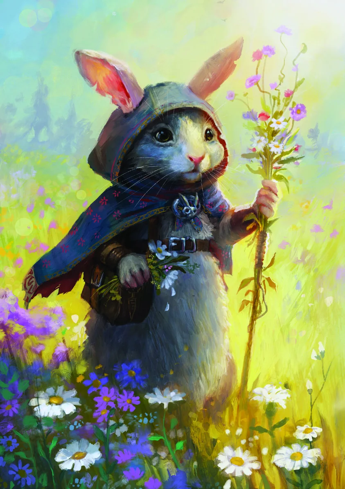

Espécies Comuns
Sua origem, linhagem, herança ou espécie define como seu personagem nasceu e como os outros o enxergam à primeira vista. Você pode ser um Anão criado nas minas sob a montanha entre incontáveis outros Anões ou um Elfo criado por Goblins! Cabe a você decidir como seu personagem começou. Escolha 1 Espécie e acrescente o bônus dela à Ficha de Personagem.
Humano (Médio)
Encontrados em todos os terrenos e ambientes, sua curiosidade e ambição os levam a explorar cada canto do mundo, tornando-os uma espécie presente em toda parte e muito versátil.
Tenaz. +1 em todas as Perícias e na Iniciativa.
Anão (Médio)
Anão, na língua antiga, significa "pedra". Você é resiliente, sólido e robusto. Mesmo levado à exaustão, não vacila. Em troca de velocidade, foi agraciado com vitalidade física e um estômago capaz de suportar os melhores (e piores) alimentos e bebidas deste mundo.
Robusto. +2 no máximo de Dados de Vida, +1 no máximo de Ferimentos, -1 Deslocamento. Você conhece Anão se sua INT não for negativa.
Elfo (Médio)
Elfos personificam rapidez e graça. Seus corpos altos e esguios escondem velocidade, elegância e astúcia inatas. Formidáveis tanto na diplomacia quanto no combate, agem depressa e muitas vezes impedem o pior ao agir primeiro.
Ágil. Vantagem na Iniciativa, +1 Deslocamento. Você conhece Élfico se sua INT não for negativa.
| E os Meio-Elfos? Misture as Espécies da maneira que fizer sentido no seu mundo. Você pode escolher apenas um dos bônus de Espécie em vez de usar ambos, ou usar os dois com metade da eficácia ou metade da frequência. |
|---|
Halfling (Pequeno)
Mais ou menos como um Humano, só que menor (exceto pelos pés). De onde vem nossa sorte? Bem... sabe o que dizem sobre pés de coelho? Comparados aos nossos, coelhos nem têm tanto pé assim. Imagine quanta sorte cabe nesses pezinhos!
Esquivo. +1 em Furtividade. Se falhar em um SAVE, você pode ter sucesso em vez disso, 1/Descanso Seguro.
Gnomo (Pequeno)
Excêntricos, curiosos e eternamente otimistas, Gnomos são alegres, especialmente quando comparados a seus parentes normalmente maiores e mais rabugentos, os Anões. Conhecidos por construir engenhocas, espalhar alegria e fazer travessuras, perseguem suas paixões com entusiasmo desorganizado.
Otimista. Permita que um aliado dentro de Alcance 6 role novamente qualquer dado único; recarrega quando você for curado até seus PV máximos. -1 Deslocamento. Você conhece Anão se sua INT não for negativa (mas chama o idioma de Gnômico, é claro).
| Descrição Livre. Quer jogar com um Halfling Robusto em vez de Esquivo? Um Humano Otimista em vez de Tenaz? Desde que faça sentido e o Mestre concorde, vá em frente! |
|---|
Espécies Exóticas
Seu cenário pode ou não comportar estas opções; consulte o Mestre antes de escolher uma delas.
Banelho (Pequeno)
Banelhos são ágeis e imprevisíveis, usando as pernas poderosas para saltar grandes distâncias e pegar os inimigos desprevenidos. Enfrentar um Banelho significa lidar com um oponente que pode atacar de ângulos inesperados e se reposicionar rapidamente no calor da batalha.
Pernas de Coelho. Antes de Interpor-se ou depois de Defender (após o dano), salte como uma Ação Livre até seu Deslocamento em qualquer direção, 1/encontro.
Draconato (Médio)
A alma de um dragão arde dentro de você, e as escamas de seu corpo são como aço forjado. Você é uma fornalha, e sua herança são as brasas que alimentam suas chamas. Invoque sua fúria, fale na língua de seus ancestrais e infunda seus ataques com ímpeto indomável.
Herança Dracônica. +1 Armadura. Ao atacar, cause dano adicional igual a LVL + CHAVE, ignorando Armadura, dividido como quiser entre quaisquer dos seus alvos; recarrega sempre que realizar um Descanso Seguro ou receber um Ferimento. Você conhece Dracônico se sua INT não for negativa.
Tiferino (Médio)
Dizem que Tiferinos nasceram da união entre humano e Ínfero, ou de uma linhagem amaldiçoada, e por isso muitas vezes vivem à margem da sociedade. Ainda assim, representam a determinação diante da adversidade. Seus ancestrais não emergiram das profundezas da Chama Eterna para sucumbir a pequenos contratempos!
Nascido das Chamas. Um dos seus SAVEs Neutros se torna um SAVE com Vantagem. Você conhece Infernal se sua INT não for negativa.
Goblin (Pequeno)
Verdes, astutos e perpetuamente difamados, Goblins prosperam à beira do caos. Para um Goblin, desaparecer nas sombras não é apenas uma habilidade: é parte de sua identidade. Afinal, que tipo de Goblin você seria se não pudesse escapar sem ser notado?
Dar no Pé. Depois de se tornar alvo de um ataque ou efeito negativo, mova-se 2 Espaços como uma Ação Livre, após o dano e ignorando Terreno Difícil. Você conhece Goblin se sua INT não for negativa.
Kobold (Pequeno)
Pequenos, muitas vezes maníacos e obcecados por dragões. Kobolds prosperam nas sombras, encontrando maneiras engenhosas de sobreviver apesar do tamanho diminuto. Subestimados por muitos, provam repetidamente que até os menores entre nós podem exercer grande poder.
Ardiloso. Force um inimigo a rolar novamente um ataque que não seja Crit contra você, 1/encontro. +3 em Influência com personagens amistosos. Vantagem em Testes de Perícia relacionados a dragões. Você conhece Dracônico se sua INT não for negativa.
Orc (Médio)
Quando você pensa que derrotou um Orc poderoso, talvez tenha apenas conseguido despertar sua ira. Enfrentar um Orc não é empreitada para os fracos de espírito. Enquanto outros se encolhem diante da aproximação da morte, Orcs desafiam seu domínio.
Implacável. Quando seus PV forem reduzidos a 0, você pode defini-los como LVL, 1/Descanso Seguro. +1 Potência. Você conhece Goblin se sua INT não for negativa (mas chama o idioma de Órquico, é claro).
| Descrição Livre. Quer jogar com um Povo-Sapo saltador em vez de um Banelho? Um Kobold Nascido das Chamas? Uma Fada alada em vez de um Povo-Pássaro? Um Povo-Texugo em vez de um Stoatling? Desde que faça sentido e o Mestre concorde, vá em frente! |
|---|
Página de Arte
Esta página contém apenas uma ilustração, sem texto a traduzir.
Povo-Pássaro (Pequeno ou Médio)
O Povo-Pássaro encontra refúgio não em pedra ou correntes, mas na vastidão sem limites do céu. Porém, o dom do voo tem um preço: ossos ocos e uma fragilidade equivalente.
Ossos Ocos. Você possui Deslocamento de Voo enquanto usar Armadura de Couro ou mais leve. Crits contra você são Cruéis (o atacante rola 1 dado adicional). Movimento Forçado faz com que você percorra o dobro da distância.
Celestial (Médio)
Descendentes de seres divinos, Celestiais carregam uma aura de nobreza e graça. Sua conexão inata com os planos superiores permite resistir aos efeitos do infortúnio, permanecendo firmes onde outros falhariam.
Sangue Nobre. Seu SAVE com Desvantagem se torna um SAVE Neutro. Você conhece Celestial se sua INT não for negativa.
Changeling (Médio)
Frequentemente caçados por seu sangue prateado, Changelings são sobreviventes naturais e assumem novas identidades com facilidade. Aqueles que mudam demais normalmente não duram muito: podem ter dificuldade para se lembrar de quem foram, tornando-se pouco mais que reflexos dos rostos que usam.
Lugar Novo, Rosto Novo. +2 Pontos de Perícia variáveis. Você pode assumir a aparência de qualquer Espécie. Ao fazer isso, pode colocar seus 2 Pontos de Perícia variáveis em qualquer 1 Perícia. 1/dia.
Cristaliano (Médio)
Formados de cristal vivo, Cristalianos são seres de beleza deslumbrante e resistência sobrenatural. Seus corpos translúcidos refratam luz e som, concedendo-lhes habilidades únicas em combate.
Aura Reflexiva. Quando Defender, ganhe Armadura igual a CHAVE e cause dano igual a CHAVE ao atacante. 1/encontro.
Dríade/Cogumelino (Pequeno ou Médio)
Ligados ao mundo natural, Dríades e Cogumelinos personificam o equilíbrio entre flora e fauna. Sua fisiologia única libera esporos tóxicos quando sofrem dano, oferecendo uma defesa natural contra quem ousa atacá-los.
Pólen/Esporos Perigosos. Sempre que um inimigo causar a você um ou mais Ferimentos, você libera esporos soporíferos: todos os inimigos adjacentes ficam Desorientados. Você conhece Élfico se sua INT não for negativa.
Meio-Gigante (Grande)
Seres imensos cuja força é tão imóvel quanto as montanhas que chamam de lar. Seu tamanho e sua resistência os tornam adversários temíveis, capazes de sobreviver até a golpes devastadores.
Força da Pedra. Force um inimigo a rolar novamente um Crit contra você, 1/encontro. +2 Potência. Você conhece Anão se sua INT não for negativa.
Minotauro/Ferais (Médio)
Minotauros e outros Ferais personificam uma conexão primal com a Natureza Selvagem, combinando força com agilidade natural. Seu corpo poderoso permite que se movam rapidamente, seja para se reposicionar e flanquear inimigos, seja para atacar com força imparável.
Investida. Quando se mover pelo menos 4 Espaços, você pode Empurrar uma criatura em seu caminho. Média: 1 Espaço; Pequena ou Minúscula: até 2 Espaços. 1/turno.
Limoide/Constructo (Pequeno ou Médio)
Afinal, o que é uma "PeSsOa"? E daí se seu coração bombeia óleo em vez de sangue? E daí se você nem sequer tem um coração?! Se consegue se espremer para dentro de uma calça ou brandir uma espada como todo mundo, quem pode dizer que você também não é uma pEsSoA?!
Constituição Estranha. Incremente seus Dados de Vida em um passo (d6 » d8 » d10 » d12 » d20); eles sempre curam o valor máximo. Cura Mágica sempre cura o valor mínimo.
Ser Planar (Médio)
Você não é deste plano de existência: sua alma não está tão firmemente presa a ele quanto a dos outros. Mas essa vulnerabilidade também traz poder, a capacidade de mudar temporariamente de um plano para outro em momentos de grande necessidade.
Mudança de Plano. Sempre que Defender, você pode receber 1 Ferimento para sair temporariamente do plano material e ignorar o dano. -2 no máximo de Ferimentos.
Roedorino (Pequeno)
Roedorinos são sobreviventes, prosperando nas sombras da sociedade onde outros temem pisar. Ágeis, engenhosos e ferozmente leais aos seus, possuem talento para transformar restos em soluções.
Correria. Ganhe +2 Armadura se tiver se movido durante seu último Turno.
Stoatling (Pequeno)
Stoatlings podem ser pequenos, mas estão longe de ser fracos. Com determinação feroz e coração de guerreiro, conseguem derrotar inimigos muitas vezes maiores. Sua agilidade e tenacidade permitem explorar as fraquezas de adversários maiores, transformando o próprio tamanho em vantagem letal.
Pequeno, mas Feroz. Sempre que fizer um ataque de Alvo Único contra uma criatura maior que você, role 1d6 adicional para cada categoria de tamanho pela qual ela for maior. Ao atacar você, a criatura faz o mesmo.
Tartarugo (Pequeno ou Médio)
Tartarugos fazem tudo sem pressa; são pacientes, robustos e são lentos para se irritar. Confiam em seus cascos grossos para proteção, tornando-se difíceis de ferir, mas seus movimentos cautelosos custam velocidade.
Devagar e Sempre. +4 Armadura, -2 Deslocamento.
Wyrdling (Pequeno)
Imprevisíveis e caóticos, Wyrdlings são resultado de magia que deu errado. Seus corpos pulsam com energia arcana bruta, e sua simples presença costuma perturbar o equilíbrio da magia ao redor.
Surto Caótico. Sempre que você ou um aliado voluntário dentro de Alcance 6 conjurar uma Magia de Grau, você pode permitir que ele role na Tabela do Caos. 1/encontro.